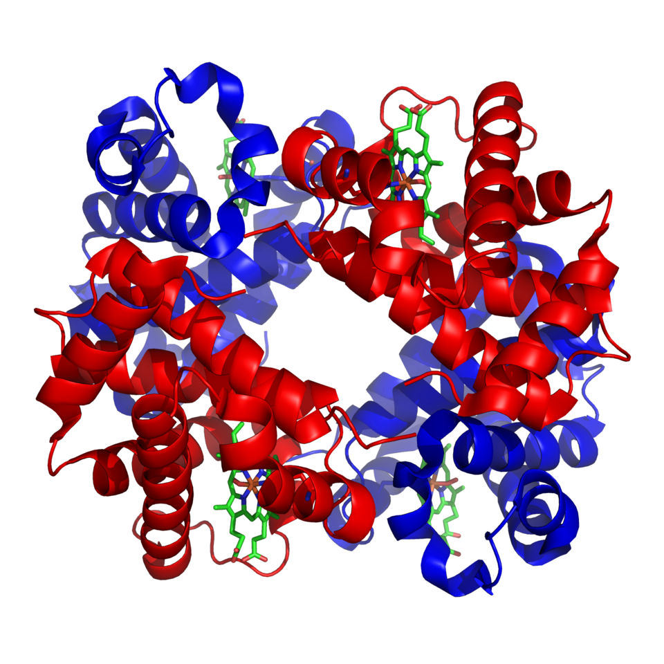

단백질 3D 구조 (헤모글로빈 1GZX)
AlphaFold 2(2020)는 2억 개 단백질 구조를 예측해 공개했다. 기존 속도로는 인류 전체가 몇 세대 걸릴 작업.
GNoME(2023, DeepMind)는 220만 개 신규 결정 구조를 발견 — 지난 800년 실험화학이 찾은 양의 800배.
이 중에는 차세대 배터리 전해질, CO₂ 포집 촉매, 고온 초전도체 후보가 포함. 기후 해법의 재료가 된다.